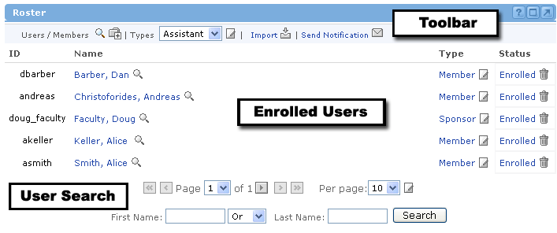
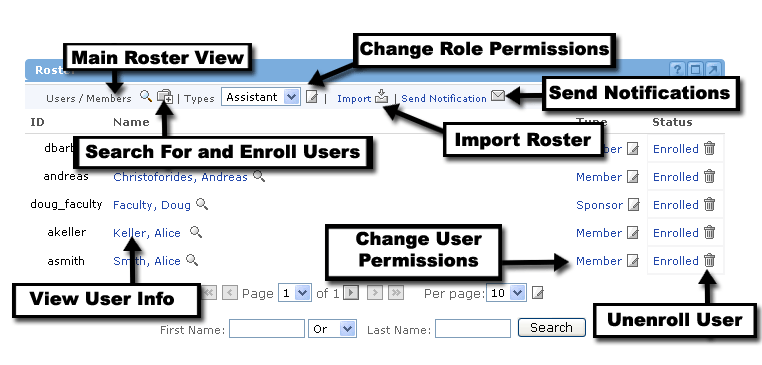

Roster Features :Manage Enrollment
:Manage Enrollment
The purpose of the Roster channel is to manage the enrollment aspects of an offering You cannot create new users from within the roster channel (This must be done through the "User Administration" channel or via an external authentication system depending on the institutional authentication method.).
The Roster channel consists of three main sections.
- The toolbar
- A navigable list of enrolled users
- A quick user search section

From the Roster channel, you will be able to:
- Go to the main view of the current roster of the offering.
- Search for users to enroll into the offering.
- Unenroll current users from the offering.
- Change permission preferences for a specific role.
- View specific information about a user.
- Change permissions for individual users enrolled in the offering.
- Import users from a file into the offering.
- Send notification messages to users in the offering.
- Search for a user already enrolled within the offering.
